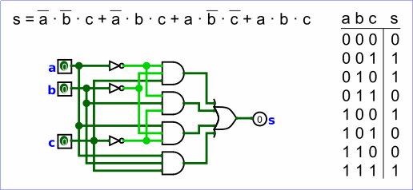

Combinational analysis
All circuits fall into one of two well-known categories: In a combinational circuit, all circuit outputs are a strict combination of the current circuit inputs, whereas in a sequential circuit, some outputs may depend on past inputs (the sequence of inputs over time).
The category of combinational circuits is the simpler of the two. Practitioners use three major techniques for summarizing the behavior of such circuits.

- logic circuits
- Boolean expressions, which allow an algebraic representation of how the circuit works
- truth tables, which list all possible input combinations and the corresponding outputs
The Combinational Analysis module of Logisim allows you to convert between these three representations in all directions. It is a particularly handy way of creating and understanding circuits with a handful of one-bit inputs and outputs.
Note: the combinatorial analysis is deactivated in Logisim-evolution. It is possible to reactivate with a command-line option.
Opening Combinational Analysis
Editing the truth table
Creating expressions
Generating a circuit